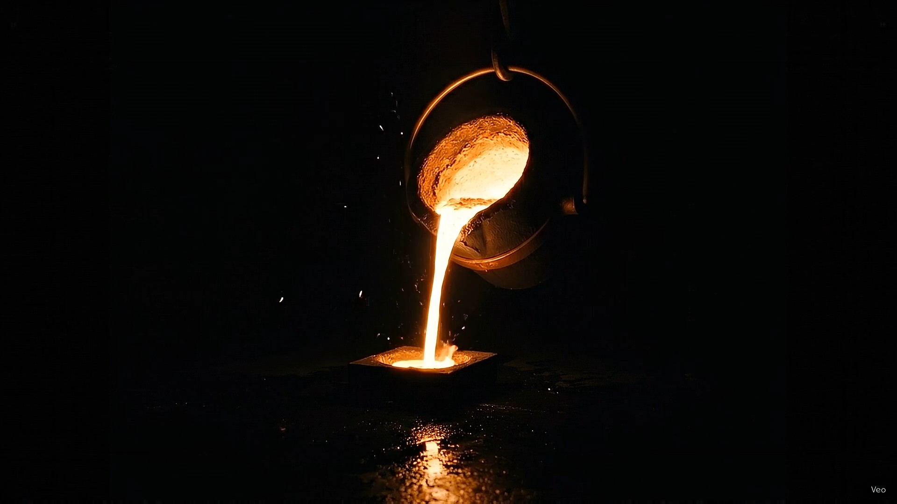
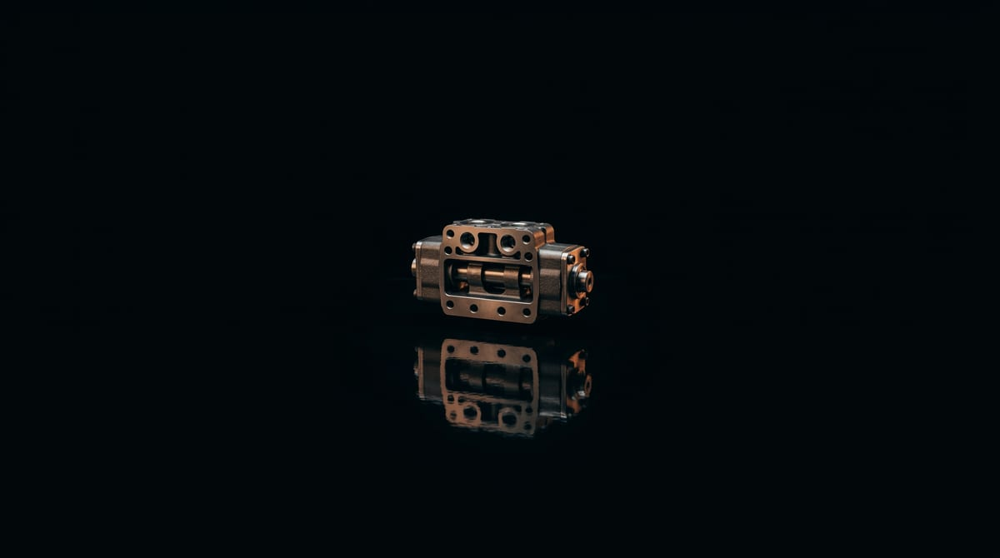

Raw Material Inspection
Incoming metal and sand inspected and tested — consistent quality from the very first heat.
Footage pending
Shell Moulded · No-Bake · In-House Machining · ISO 9001:2015 · 0.5 kg – 500 kg
01 · Shell Moulding
In-house resin-coated sand plant. Heated metal patterns. Shells that hold tolerances conventional foundries cannot match. Surface finish that your machinists will thank you for. Parts from 500 grams to 150 kilograms are made in our foundry.
Shell moulding is a precision casting process widely preferred for components requiring superior surface finish, dimensional consistency, and repeatability — compared to conventional green sand moulding.
02 · No-Bake Casting
When your casting weighs 50 kilograms — or 500 — our No-Bake line takes over. Structural components. Complex internal geometries. Heavy-walled housings. The same standard. A bigger scale.
No-bake casting is preferred for medium to large-sized castings where strength, flexibility, and dimensional stability are essential.

03 · In-House Machining
HMC. VMC. CNC Lathe. On-site. Your casting doesn't leave our facility until it's machined, dimensionally verified, and ready for your assembly line. One partner. One responsibility. Zero gaps.
04 · Export Quality
ASTM A802. JDM B15. JDT 17015. ISO 9001. We speak the language of international quality standards — because our customers demand it, and because we've earned it.
Spec-driven capability — shell moulding, no-bake, machining, melting, finishing and quality.
Incoming metal and sand inspected and tested — consistent quality from the very first heat.
Footage pendingControlled sand properties and precise shell formation — mould strength and dimensional accuracy locked in here.
Footage pendingMonitored melting and metallurgical control to hit the required chemistry and mechanical properties.
Footage pendingOptimised pouring parameters and process discipline — defect-free, reliable castings, every heat.
Footage pendingControlled fettling and finishing for clean surfaces and dimensional consistency.
Footage pendingFinal machining, inspection and dispatch — to your specification and delivery requirement.
Footage pendingMoulding
Finishing
Machining
Testing & QC